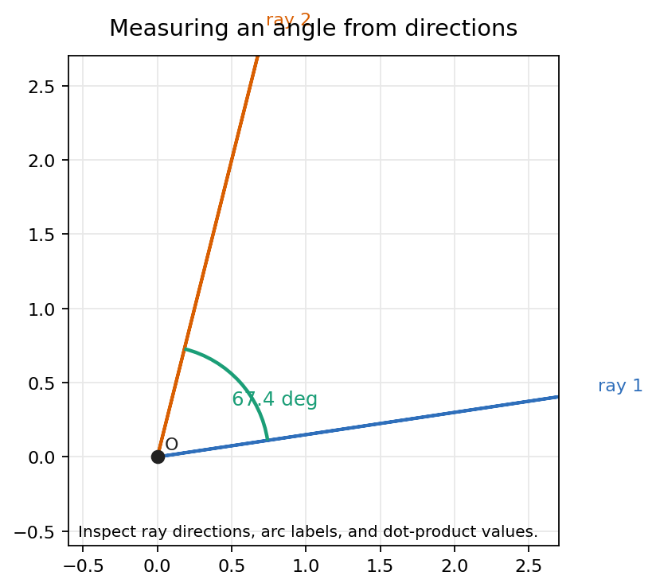
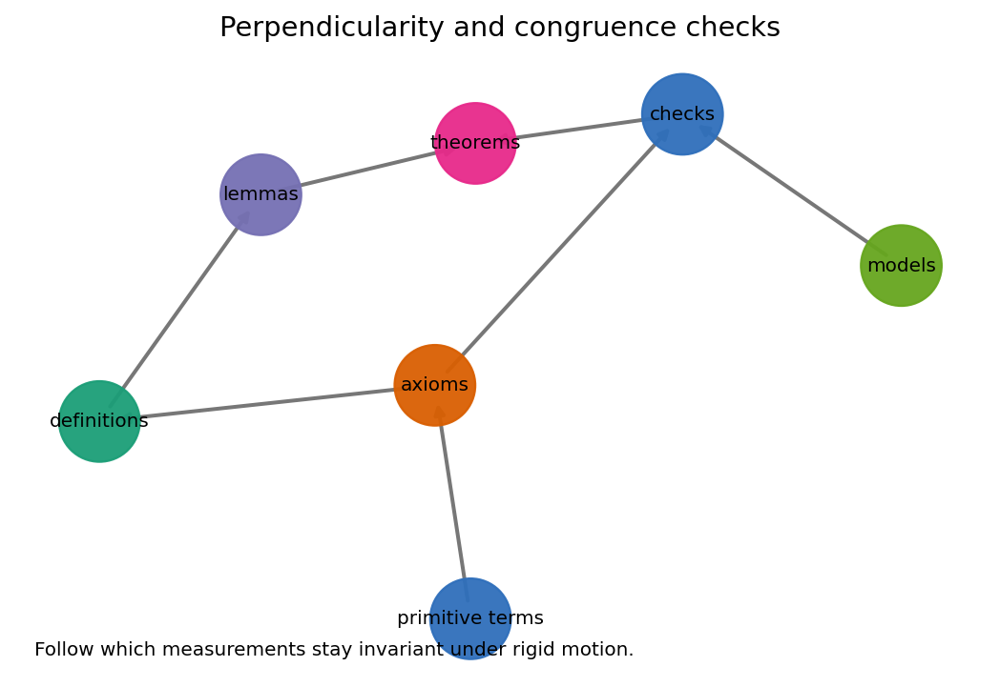
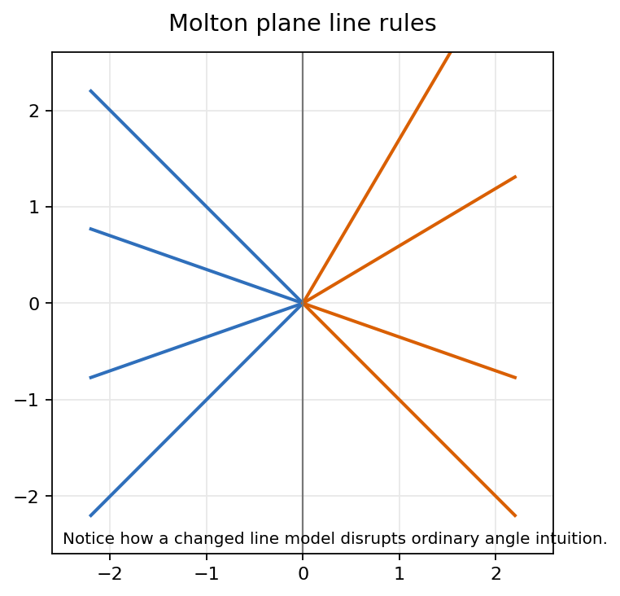
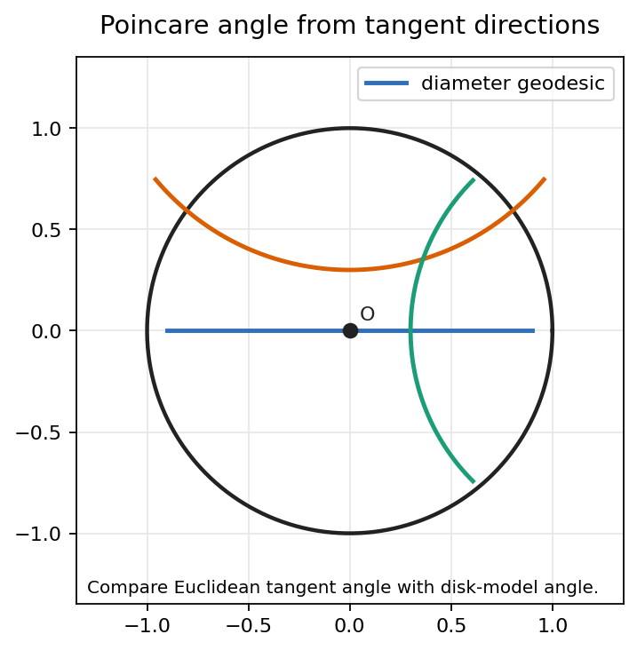

Metric predicates, model-dependent line rules, perpendicularity, angle congruence, and conformal angle measurement in the Poincare disk.
Source span: printed pages 90-123; PDF pages 105-138.
Notebook: Geometry-A-Metric-Approach-with-Models/chapter-05-angle-measure/05-angle-measure.ipynb
Lecture aim: decide when an angle statement is a metric computation, a model convention, or a conformal invariant.
Can the claim be tested with a distance, dot product, tangent vector, or normalized direction?
Example: \(u\cdot v=0\) signals a right angle in a Euclidean coordinate chart.
Does the claim depend on which sets count as lines, rays, or geodesics?
Example: a bent Molton line changes the direction data carried by a ray.
Does a representation distort distance while preserving tangent angles at intersections?
Example: Poincare disk geodesics use Euclidean tangent angles.
Working habit. State the primitive, compute the measurement, then name which transformations are allowed to preserve it.
\(\displaystyle \theta=\operatorname{atan2}\left(|u_xv_y-u_yv_x|,\;u\cdot v\right)\)
Choose nonzero direction vectors \(u\) and \(v\) along the two rays.
Normalize if convenient: scaling either vector by a positive number does not change \(\theta\).
Use dot and signed-area data together, so the measured opening is independent of the ray lengths.

The notebook reports a concrete angle from two ray directions, with the arc and vector data visible for inspection.
Ask which changes leave the number fixed: translate the entire scene, lengthen one ray, rotate both rays, or reverse exactly one ray.
Two rays through a common vertex are perpendicular when the accepted angle measure gives a right angle.
Coordinate test: \(u\cdot v=0\), so \(\theta=\pi/2\).
Angles are congruent when their measures agree under the model's accepted measurement rule, not when a drawing merely looks similar.
Do not infer a right angle from screen appearance. Identify the metric or angle-measure function first.

The notebook checks which measurement data stay fixed when the coordinate picture moves.

A changed line system can make familiar slope intuition unreliable.
The carrier set may still look like the ordinary plane while the declared lines no longer behave like Euclidean straight lines.
An angle built from Molton rays must read direction from the model's ray rule. Ordinary Euclidean slope is no longer a complete description.
Angle claim = vertex + two model rays + accepted measure
Where a Molton line changes course, the visible corner is a property of the model line, not an accidental drawing artifact.
Disk geodesics are diameters or arcs that meet the boundary circle orthogonally.
At an interior intersection, measure the Euclidean angle between tangent directions to the two geodesics.
Conformal means local angle data survives the representation.
Hyperbolic lengths are not read as Euclidean chord lengths, even though hyperbolic angles are read from Euclidean tangents.

The disk boundary, diameter geodesic, and circular geodesics are all visible, so tangent-angle comparison is inspectable.
The boundary circle sets the disk model. The interior angle is read from tangent directions where geodesics meet.
| Setting | Line Or Geodesic Primitive | Angle Data | Stable Under |
|---|---|---|---|
| Euclidean coordinate plane | Straight affine lines and their rays. | Direction vectors at a vertex; dot and determinant compute the opening. | Rigid motions, uniform scaling of rays, coordinate rotations. |
| Molton plane | Model-declared lines, including bent positive-slope behavior. | Direction must be read from the model ray, especially near a bend. | Only transformations respecting the Molton incidence and metric rules. |
| Poincare disk | Diameters or arcs orthogonal to the unit boundary circle. | Euclidean tangent angle at the geodesic intersection. | Conformal disk maps and hyperbolic isometries preserving tangent angles. |
Compute from vectors or tangent directions.
Declare what counts as a ray or geodesic.
Preserve local angle while changing distance scale.
\(A=(0,0),\;B=(2,0),\;C=(0.5,1.25)\)
Use direction vectors \(u=B-A=(2,0)\) and \(v=C-A=(0.5,1.25)\).
Compute \(u\cdot v=1\) and \(|\det(u,v)|=2.5\).
\(\theta=\operatorname{atan2}(2.5,1)\approx 68.20^\circ\).
The generated check record reports 68.19859051364818 degrees for this angle.
Label each claim as metric, model-dependent, conformal, or mixed.
The fourth claim is false: the disk picture is conformal for angle, not Euclidean for distance.